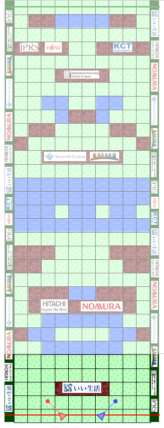
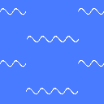
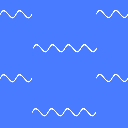
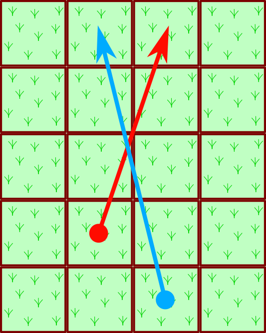

SamurAI Jockey 2018-2019 Rule Summary

-
The game is a two player race.
-
In each step, players can
change their speed by ±1,
in either x or y direction, or both.
-
There are obstacles
 and/or
puddles  in the course.
and/or
puddles  in the course.
- Moves going out of the course or touching an obstacle
are canceled.
-
Players' speed becomes zero when their moves end at paddles.
Note that moves can jump over paddles.
-
Players have limited fields of vision.
Obstacles far away cannot be seen.
Two players have the same field of vision;
the follower has some advantage.

-
When players' moves cross or touch each other,
the move without priority is canceled.
-
The player behind (with the smaller y-axis) has
the priority.
-
When at the same y-axis, one to the left (with
the smaller x-axis) at start has the priority.
-
Exception: When the move touches the square of
the opponent's original position, it is canceled.
-
A match comprises of two races on the same race course,
with the start positions exchanged.
One with the shorter total goal times
is the winner.
Go Back